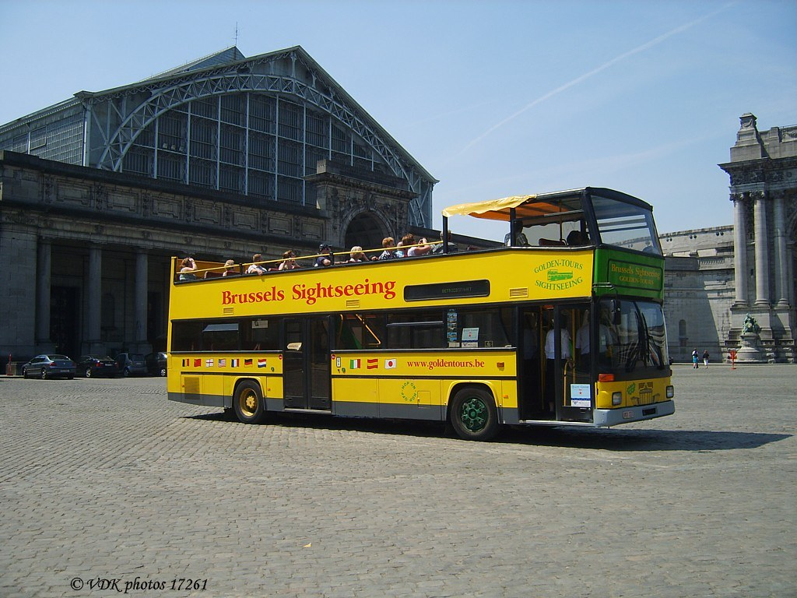

Le Bus Principal : MAN SD202
Le modèle principal utilisé par mon père était un MAN SD202, un bus à double étage acheté directement en Allemagne, à Berlin. C’était un véhicule solide, spacieux et parfaitement adapté aux circuits touristiques dans Bruxelles.
Sur les 8 bus qu’il possédait, 3 étaient cabriolets avec le toit ouvert pour permettre aux passagers de profiter pleinement de la vue et du beau temps.
Chaque bus était équipé d’un système audio moderne, avec de la musique diffusée dans des casques individuels pour le confort des passagers.
À bord, les clients pouvaient également se servir grâce à un distributeur de boissons mis à disposition.
Tous les bus avaient un petit surnom : on les appelait par les lettres de leur plaque d’immatriculation. Le tout premier bus, celui que mon père aimait le plus, s’appelait simplement : VKK.
Aujourd’hui encore, certains anciens clients se souviennent de ce fameux “VKK”, le tout premier, celui par qui tout a commencé.